The Applications Tab
The Applications tab is the main interface for locating your applications and analyzing their performance. Unravel supports both ad-hoc applications and repeatedly running workflows or data pipelines. Ad-hoc applications are Hive queries, MR jobs, Spark applications, Impala queries, and so on; these are generated by end user tools (such as BI tools like Tableau, Microstrategy etc.) or submitted via CLI. Repeatedly running workflows or data pipelines are created using cron or schedulers like Oozie, AirFlow or ETL tools like Informatica, Pentaho and others. Unravel currently supports the the following application frameworks:
Map-Reduce
Hive (on Map-Reduce)
Tez
Hive (on Tez)
Spark
Native
Spark Streaming
SparkSQL
Impala
Pig
Cascading
Kafka
 Your application's performance and reliability depends on several factors such as quality of the code, types of joins used, configuration settings, data size, scheduler settings, contention with other applications, and so on. It takes significant expertise and effort to get to the root cause(s) of an application's problems. Unravel's Intelligence Engine provides insights into your application's run to help resolve it's problems/inefficiencies. These insights are called events. For more information about events, see the Event Panel Examples.
Your application's performance and reliability depends on several factors such as quality of the code, types of joins used, configuration settings, data size, scheduler settings, contention with other applications, and so on. It takes significant expertise and effort to get to the root cause(s) of an application's problems. Unravel's Intelligence Engine provides insights into your application's run to help resolve it's problems/inefficiencies. These insights are called events. For more information about events, see the Event Panel Examples.
The Applications Tab has three views you can chose using Show:
,
and
| 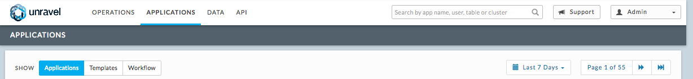 |
Common Features across Tiles, Panels, Tabs, etc.
When no information is relevant/available, it's usually explicitly stated. For example, when there are no events, the text No Events is displayed inside the event box; the error tab notes there are no errors, and so forth.
When there are multiple tabs, clicking on the tab will display it.
Lists (applications, tables, stages, etc.)
Tables can be sorted by a column in ascending or descending order, i.e., READ I/O, Memory GB. The column currently used will have the arrow indicating the sort order highlighted ( ). Click on a column name to use it for the sort. Clicking on a column already being used alters the sort order.
Clicking on the app name/id usually bring ups the information on the app, i.e., the Spark Application Manager, table information, etc.
The application status is color coded: , ,
 ,
,  , when applicable. The Auto Action/Tuning column ( ) notes if Unravel has tuning suggestions ( ) or the application has triggered an Auto Action/alert (
, when applicable. The Auto Action/Tuning column ( ) notes if Unravel has tuning suggestions ( ) or the application has triggered an Auto Action/alert (  ).
).There is an Auto Actions column (
 ) when relevant. The number of auto actions (0-n) triggered is noted.
) when relevant. The number of auto actions (0-n) triggered is noted.When more information glyph ( ) appears clicking on it displays the information in a new view/tile, i.e., APM, job block, etc.
A block glyph ( ) allows you to open the row details in a block below the tile. Green indicates the block is open/displayed, grey otherwise. Click on it open/close the block.
Graphs
Frequently a pull-down menu, i.e., , above the graph offers options to sort the graph on, i.e., various metrics, filters, types, etc.
If you can chose how to display the graph, i.e., area, line, the options are displayed in the upper right corner ( ). Click on the graph type to change the display.
Hovering within the chart/graph or on a diagram item, i.e., line, execution, brings up the information for that point/item in time in a text format ( 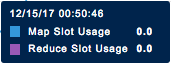 ).
Applications
Finding Applications
You can search for your application(s) in a variety of ways:
By full job ID, user name, table name or cluster ID via the global search bar in the top banner (1).
Filtering by app name, app type, status, queue, user, cluster, duration and number of events via the left side panel (2), and
By time period, including specifying custom range by dates and times, using the pull-down menu (3).
Initially search results are ordered by the most recent start time. To reorder the results by another property, click the appropriate header in the results table.
| 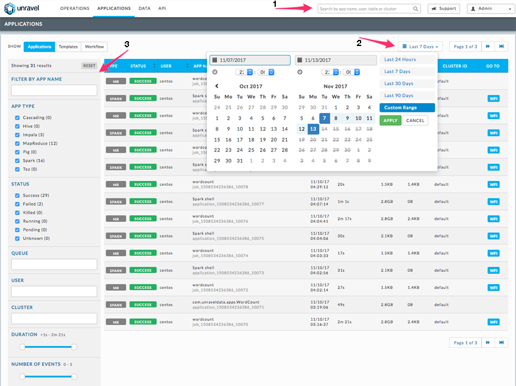 |
Search results list individual jobs and their IDs. If the job is part of a Hive query, Pig script, or a Workflow, a link to that Hive query/Pig script/workflow page is noted in the job's Go To column. To go to the job-specific page, click the job ID. To go to the application-specific manager for a query/script/job/workflow, click the glyph in the GoTo column.
| 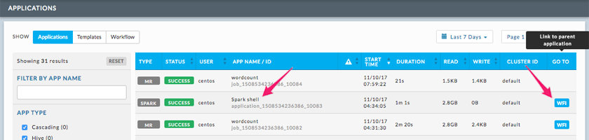 |
Application Managers Basic Layout
Below we are using the Spark Application Manager as the example. Many other tiles follow this format, MapReduce, Workflow, Fragments, Hive, etc.
A black title bar notes the type of tile (Spark, Impala, MapReduce, Fragment, etc) and the job ID. The right side of the title bar are glyphs for adding a comment, and to minimize or close the tile if possible.
Unravel's Intelligence Engine provides insights into an application and may provide recommendation, suggestions and insights on how to improve the application's run. When there are insights a bar appears immediately below the title bar. If Unravel has recommendations the insight bar is orange, otherwise it's blue. For more information about events, see the Event Panel Examples.
The next section contains the Key Performance Indicators (KPIs) and general job information.
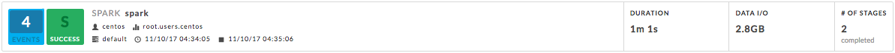 [empty]
Event icon: notes the number of events the job had. If there were no events No Events is noted instead of the box. This job has 4 events, clicking on the icon brings up a panel which contains one or more sub-tabs, as relevant, i.e., Recommendations, Efficiencies, Application Failure. See the Event Panel Examples.
Job icon: notes the job type and status. The box is colored code the same as the application status.
Job information: user, queue, start, stop time, etc.
KPIs: these vary by job type.
The last section, typically divided into two, has specific information related to job. Each Application-Specific Manager Section goes into detail about this section. If the job is composed of tasks/jobs/stages they appear on the the left under Navigation. Clicking a row brings up detailed information about it in a tile/panel below. The Auto Action (
 ) column notes the number of events associated with the stage
) column notes the number of events associated with the stage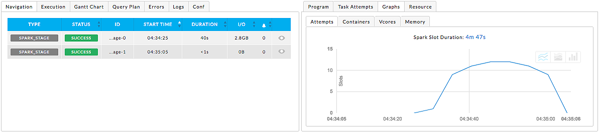
Common Sub-Tabs: Application Managers and views frequently contain the following sub-tabs. The contents will vary by job type. The below examples are again from the Spark Application Manager.
Errors: Lists all errors associated with the job. Like job status, the errors are color coded and number for each type (fatal, errors, warnings) are noted. "No errors found" when there are none. Errors for each application are categorized by severity type and also include keywords and details associated with each. Keywords extract important details from the errors messages/log data that can help developers/operators quickly root cause issue. Examples of keywords include Oozie errors code(s), Java run time error(s), etc.
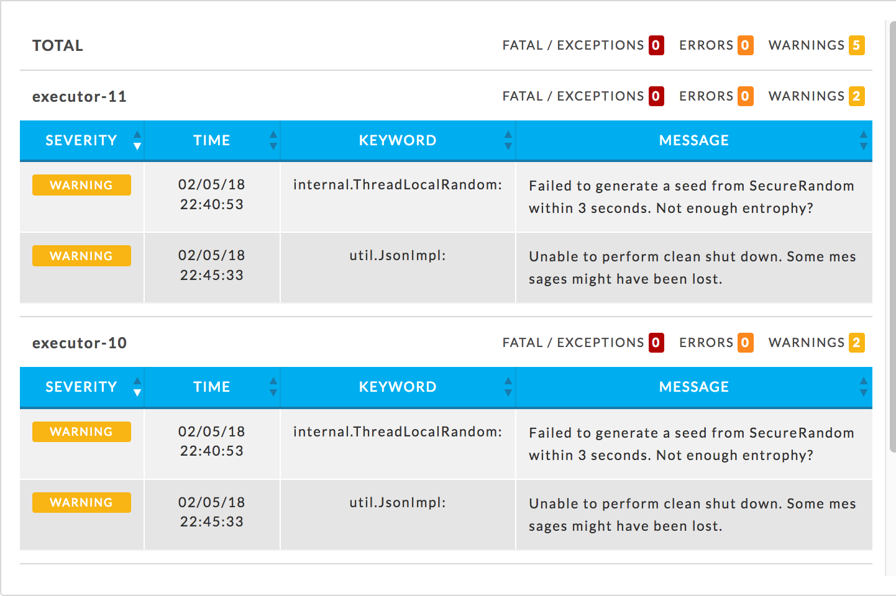 Logs: A list available logs. Click on the name to view the log information. "No logs are available for this job." is listed if there are none.
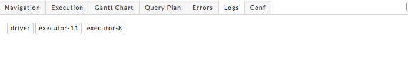 Conf: List the configuration parameters for the task/job being displayed and their values. The parameters vary according to task/job.
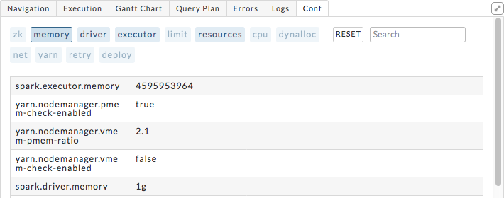
[empty]
Spark Application Manager
See the Spark Application Manager page.
Hive Application Manager
The Hive Application Manager provides a detailed view into the behavior of Hive queries. Typical users are Hadoop DBAs or application owners (engineers, BI team, analysts). You can use this view to:
resolve inefficiencies, bottlenecks and reasons for failure within applications.
Events: The number, if any, of Unravel insights for this query. See the Event Panel Examples for more information.
Duration: Total time taken by the application to complete execution.
Data I/O: Total data read and written by the application.
Number of YARN apps: The number of YARN apps making up the Hive query.
| 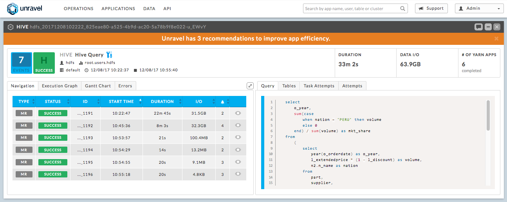 |
By default the Hive APM opens showing the Navigation and Query tabs.
The left sub-tabs are:
Navigation: List all the MapReduce jobs associate with the query. Click on the job name bring up job in the MapReduce Application Manager tile.
Execution Graph: Shows detailed information about the MapReduce jobs and their relationship with one another. This view helps identify bottlenecks and inefficiencies.
This graph provides a quick and intuitive way to understand the MapReduce jobs. Upon opening the tab you immediately see the MR jobs (1) in relation to each other and some job info: tables used, the job length in absolute and relative value to the whole.
Clicking on the job brings up a box with more Table KPI's, forward path(s) for the Map and Reduce operations, and input paths (should you want to show them). To close the box click close (2) or scroll within the tab.
Click on a path point (3) drill deeper. The resulting text box notes the operation type (i.e., MapJoin, ReduceSink, etc.), and various key information about the operation. The information displayed is specific to that operation at that time.

Gantt Chart: See the here for an example, the only difference is MapReduce jobs instead of Spark Stages are listed.
Errors: Exceptions, errors, and warnings associated with this application. See here for an example.
The right sub-tabs are:
Query: Shows the Hive Query. See the Hive Application Manager tab above for an example Hive Query window.
Tables: A list of all the accessed Tables.
Clicking on the table bring up the Table Detail. See here for more information on this view.
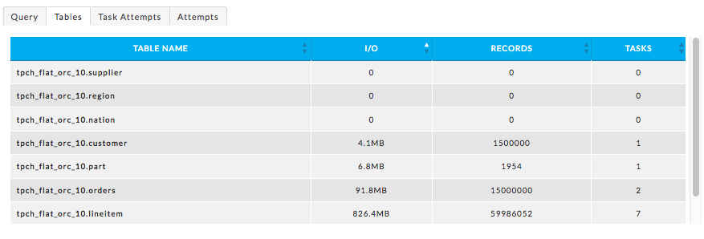 Task Attempts: Displays MapReduce task attempts by success, failed, and killed status. The data displayed is for the entire HIVE job. To see the details for a specific MapReduce information specific to a MapReduce job click on the job in Navigation or Gantt tab.
Attempts: Graphs the Map and Reduce tasks over the duration of the job.
MapReduce Application Manager
The MapReduce Application Manager provides and easy way to understand the breakdown of the application. You can use this view to:
Drill down into MapReduce jobs that make up the application, and
Resolve inefficiencies, bottlenecks and reasons for failure within applications.
It contains similar sections to the Hive Application Manager and additionally shows the timeline view of MapReduce job execution, logs and configuration.
Events: The number, if any, of Unravel insights for this query. See the Event Panel Examples for more information.
Duration: Total time taken by the application to complete execution.
Data I/O: Total data read and written by the application.
| 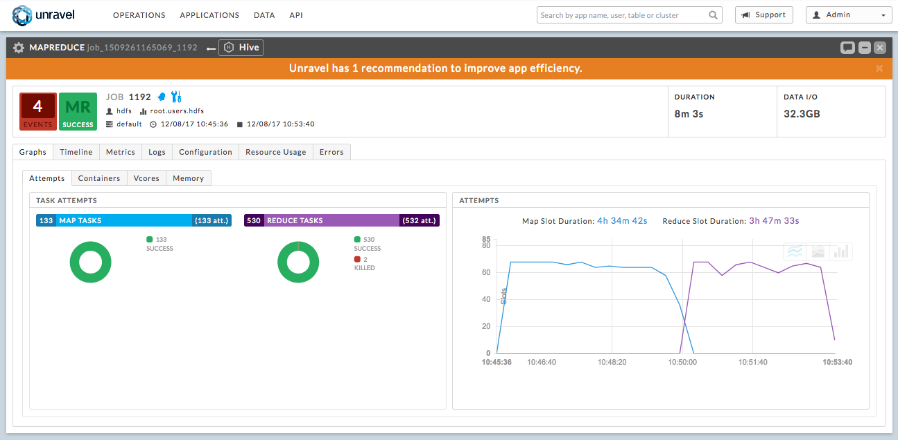 |
By default the MapReduce APM opens in the Graphs | Attempts view.
Graphs: Has four (4) sub tabs.
Attempts: Number of task attempts are charted in "wall-clock" time. The aggregated time of all tasks running in on the Map/Reduce slot duration is noted textually.
Containers, Vcores, andMemory: Graphs utilization of slot containers, Vcores, and memory over time.
Timeline: Displays the details of each MapReduce job by showing the execution of each task on the machine it was executed on. It's divided into two (2) sections, a Distribution chart which initially displays the Map jobs; you can change it to display the Reduce view (1). The bottom section has two tabs (3), Timeline and Selected Tasks. You can filter the Timeline by Map, Reduce or Killed/Failed jobs. When in the Selected Tasks view click on the task to get more details.
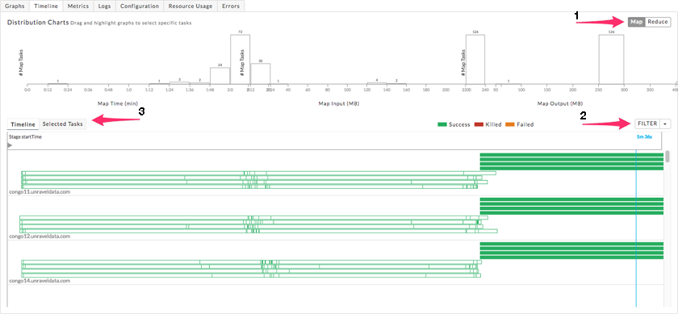 Metrics: The metrics, their definitions and values.
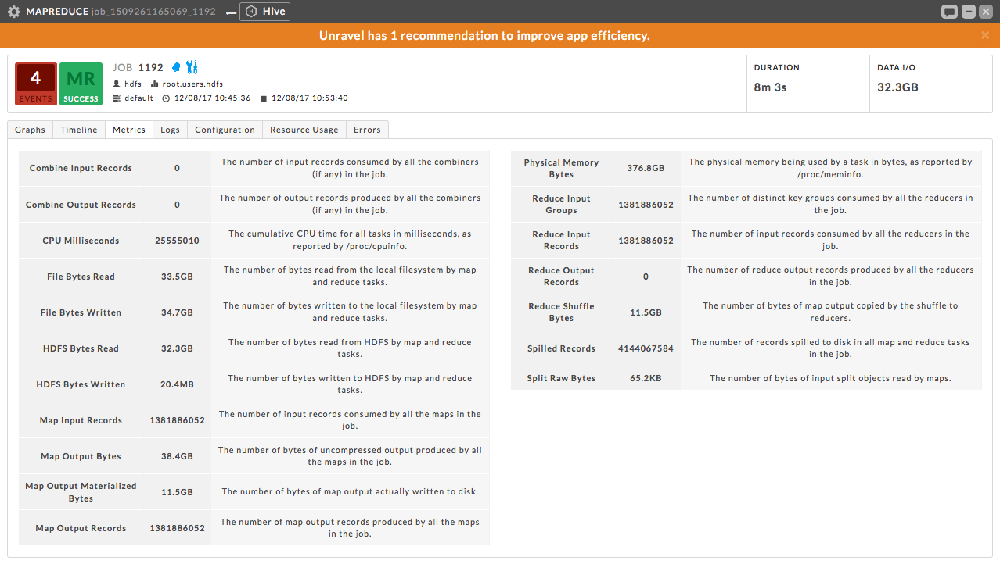 Logs: Logs for the driver and executors of this application. See here for an example.
Configuration: The defined parameters and their values. See here for an example.
Resource Usage: Graphs JVM-level metrics at the executor and driver level.
These graphs are useful for identifying critical resources that caused a performance degradation.Initially only ten (10) of the series are graphed. You can select one or more series to use (1) and you can choose to show more or less of the series (3). Clicking on a name causes the graph to only display information for that series. Use the METRIC pull-down menu (2) to chose what metric to graph. Click Get Data to retrieve the data for that metric which can be viewed in its Raw form, JSON, or headers. The metrics fall into four categories: CPU, OS Memory, Java Memory, Java GC, Java GC (Optional). For a complete listing, see Resource Metrics.
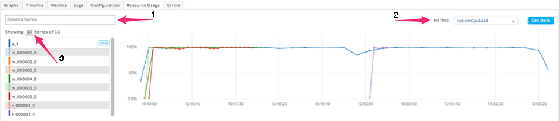 Errors: Exceptions, errors, and warnings associated with this application. See here for an example.
Impala Application Manager
The Impala Application Manager provides a detailed view into the behavior of Impala queries.
Events: The number, if any, of Unravel insights for this query. See the Event Panel Examples for more information.
Duration: Total time taken by the query.
Data I/O: Total data read and written by the query.
Number of Fragments: Total number of query fragments.
Number of Operators: Total number of operators in this query.
By default the Impala APM opens showing the Fragments and Query tabs.
The left sub-tabs are:
Fragments: Displays a table with information about each fragment associated with this query. The Coordinator fragment (1) has a purple label. To see details (Operators) about a particular fragment, select its row in the table, or click More (2).
Operators: Displays a list of all operators for all fragments.
You can search the operators name. Click on the operator to display its details.
Scan HDFS details
Aggregate Details
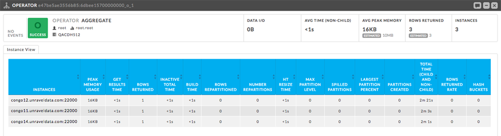 Exchange Details
Gannt Chart: Charts the fragments.
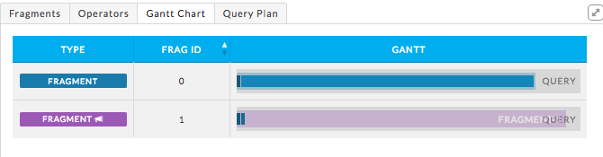 Query Plan: Shows the query plan in fragment or operator view.
Both the fragment and operator view are shown below. Hover over the operator to get detailed information. Click on the button to switch views.

The right sub-tabs are:
Query: Shows the query plan code. Click on Query Copy to copy the query. (See 3 in Impala APM view above.)
Mem Usage: Graphs the Memory Usage by peak usage. Notes the maximum memory used on what host and the estimated memory per host.
[empty]
The Kafka Application Manager provides Multi-Cluster support for monitoring:
Multi Cluster Metrics Monitoring, and
Multi Cluster Consumer Offset/Lag Monitoring.
Operations | Charts | Kafka displays the list of Configured Kafka Clusters.
Bytes in/sec
Bytes out/sec
Messages in/sec
Total Fetch Requests per /sec
Number of Active Controller
Number of Under Replicated Partitions Number of Offline Partitions
Click on the Cluster Name to bring up the Cluster View.
 |
This view has three sections:
| 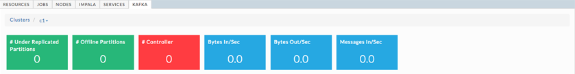 |
kafka.server:type=ReplicaManager,name=UnderReplicatedPartitions
kafka.controller:type=KafkaController,name=ActiveControllerCount
kafka.server:type=KafkaRequestHandlerPool,name=RequestHandlerAvgIdlePercent
kafka.server:type=BrokerTopicMetrics,name=BytesInPerSec
kafka.server:type=BrokerTopicMetrics,name=BytesOutPerSec
kafka.server:type=BrokerTopicMetrics,name=MessagesInPerSec
kafka.server:type=ReplicaManager,name=PartitionCount
kafka.server:type=ReplicaManager,name=LeaderCount
kafka.controller:type=KafkaController,name=OfflinePartitionsCount
kafka.network:type=RequestMetrics,name=TotalTimeMs,request=Fetch
kafka.network:type=RequestMetrics,name=TotalTimeMs,request=Produce
kafka.network:type=RequestMetrics,name=RequestsPerSec,request=Fetch
kafka.network:type=RequestMetrics,name=RequestsPerSec,request=Produce
kafka.log:type=LogFlushStats,name=LogFlushRateAndTimeMs
kafka.server:type=DelayedOperationPurgatory,name=PurgatorySize,delayedOperation=Produce
kafka.server:type=DelayedOperationPurgatory,name=PurgatorySize,delayedOperation=Fe
 |
Organized by Topic, you can search on the topic name; any topic matching or containing the search sting will be displayed. Click on the Topic or Brokers name to see the Kafa Topic view. In the list below test2 has two (2) consumer groups associated with it, demo and test-consumer-group.Click on the Consumer Group name to bring it up in the Consumer Group View.
| 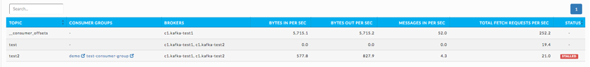 |
Number of Topics
Number of Partitions
The Topic lists displays the KPIs; when details are available a more info glyph is displayed. Click on it to bring up the Kafka view for the topic. Below the list are two tabs which display graphs of the Topic and Partition details. By default the window opens with the Topic Detail graph displayed.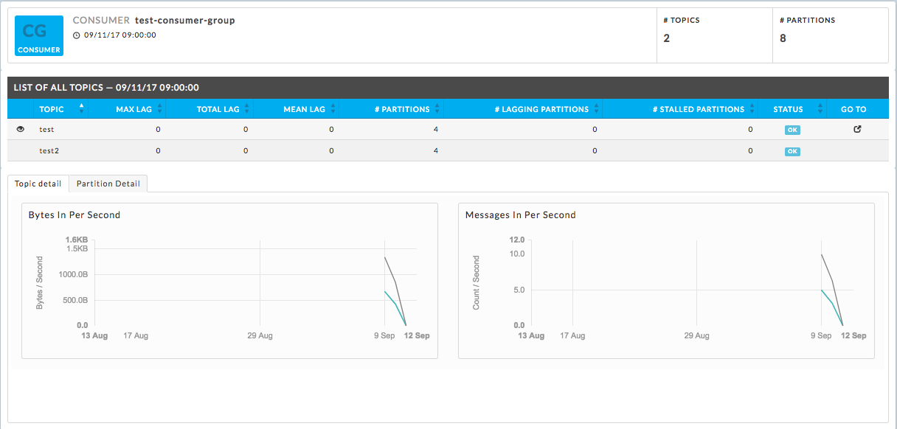
You can chose both the Partition and the Metric for the display. By default the 0th partition is displayed using the metric offset. A Partition Details' list is populated if the details are available.
 |
The Kafka View has two tabs, Topic Detail and Partition Detail. Each view has a Consumer Details' list which is populated if the details are available.
Kafka Topic Detail
By default the Kafka Topic Detail opens in the Topic Detail view which graphs the KPIs.
| 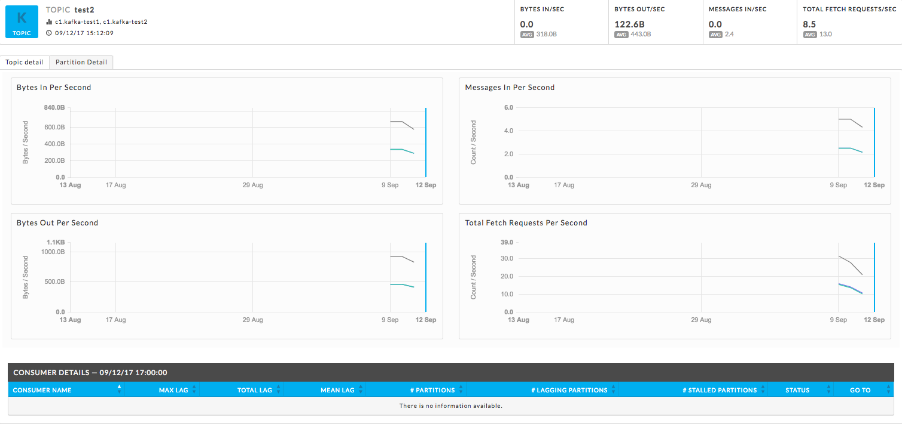 |
Kafka Partition Detail
You can chose both the Partition and the Metric for the display. By default the 0th partition will be displayed on using the metric offset.
 |
Auto-detection of Lagging/Stalled Consumer Groups
Unravel determines Consumer status by evaluating the consumer's behavior over a sliding window. For example, we use average lag trend for 10 intervals (of 5 minutes duration each), covering a 50 minute period. Consumer Status is evaluated on several factors during the window for each partition it is consuming.
For a topic partition Consumer status is
Stalled if:
Consumer commit offset for the topic partition is not increasing and lag is greater than zero.
Lagging if:
Consumer lag for the topic partition is increasing consistently, and,
An increase in lag from the start of the window to the last value is greater than lag threshold (e.g., 250).
The information is distilled down into a status for each partition, and then into a single status for the consumer. A consumer is either in one of the following states:
OK,
Warning: the consumer is working, but falling behind, or
Error: the consumer has stopped or stalled.
Tez Application Manager
The Tez Application Manager provides a detailed view into the behavior of Hive queries as a DAG (Directed Acyclic Graph).
To troubleshoot Tez data collection issues, check /srv/unravel/log_hdfs/unravel_us_1.log.
Events: The number, if any, of Unravel insights for this query. See the Event Panel Examples for more information.
Duration: Total time taken by the query.
Data I/O: Total data read and written by the query.
| 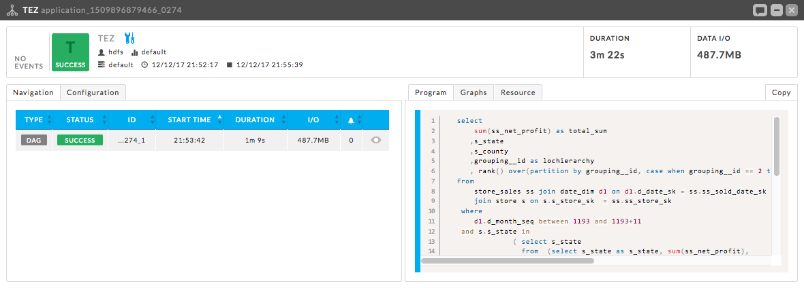 |
By default the Tez APM opens showing the Navigation and Program Tabs.
The left sub-tabs are:
Navigation: List the Dag jobs with KPIs, Duration and I/O.
The DAG detail has six tabs:
Query: Displays the query.
Graph: Displays the vertices and their relationship to each other. Clicking on a node brings up the task details.
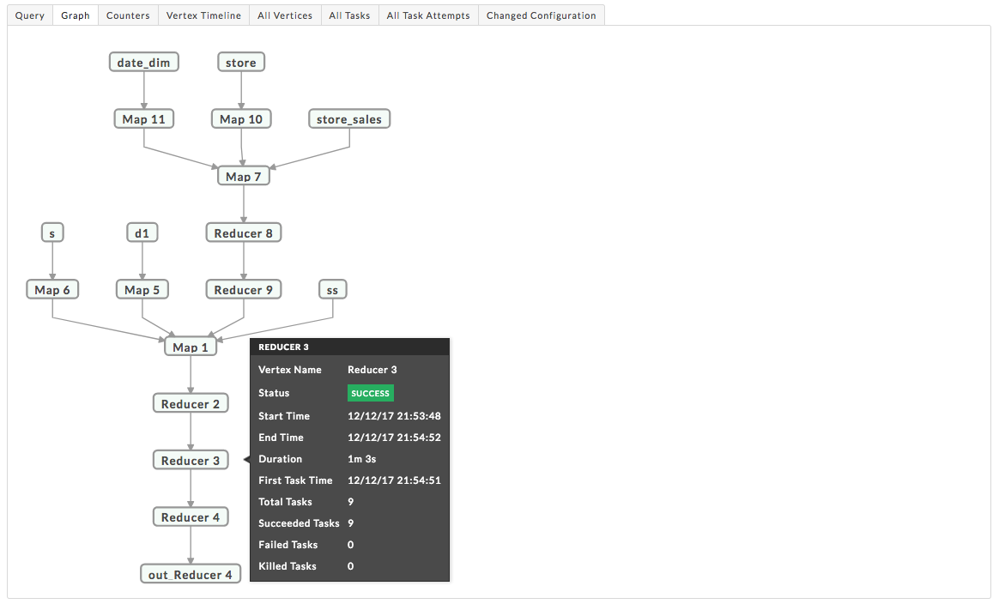
Counter: Lists all the relevant counters for the Tez-DAG and their values.
Vertex Timeline: Displays the timeline for all tasks. The task time can be displayed in both Wall Clock time and Total Run time as applicable. Hover over the task to display the information in text.

All Vertices: List each vertex and their KPIs. The Vertices are searchable by Vertex Name; vertices containing the string will be displayed.
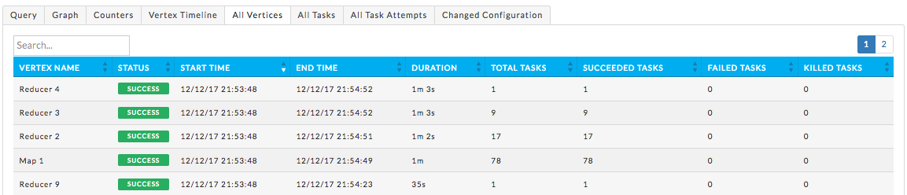 All Task: List all tasks, their status (failed, success, etc.), vertex name and other relevant information. The tasks are searchable by Task Id; Tasks containing the string will be displayed.

All Task Attempts: List all attempts, their status (failed, success, etc.), vertex name and other relevant information.
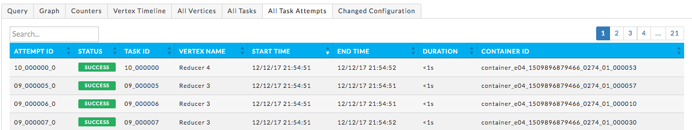
Changed Configuration: Lists all relevant parameters and their value.

Configuration: List the configuration parameters and their values.
The right sub-tabs are:
Program: Displays the query.
Graphs: Has three (3) sub tabs.
Containers, Vcores, andMemory: Graphs utilization of slot containers, Vcores, and memory over time.
Resources: Graphs the resources consumed.
By default the Resource tab display the first ten (10) series using the systemCpuLoad metric. You can select one or more series to display in the Select Box. You can change the default number of series to show (1-n). Clicking on a series name causes the graph to display that series alone. You chose the Metric to graph from the pull-down menu. Click Get Data to retrieve the data for that metric, it can be viewed in its Raw form, JSON, or headers.
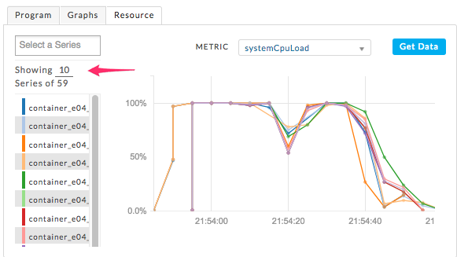
Event Panel Examples
The Unravel intelligence engine helps you manage your applications more efficiently by providing insights into their run. The UI engine gives its insights and tuning suggesting via the Events Panel. Not all UI engine insights results in concrete recommendations, so to take full advantage you must read the efficiency panel. There is not a 1-1 correspondence between the event and recommendation number. A single event might lead to no or many recommendations.
Recommendations
Lists the parameters to change, shows their current and recommended value.
Efficiency
The efficiency list details the inefficiencies. The UI engine then might
make a recommendation and may note the expected result from such a change,
make a suggestion, or
note where to look to increase efficiency
Below are two examples. Each type of job and instance of a job has events relevant to that particular job and instance.
MapReduce Job
This MapReduce job is part of a Hive Query. In this example the UI engine lists list four (4) events and has three (3) recommendations.
Recommendations
| 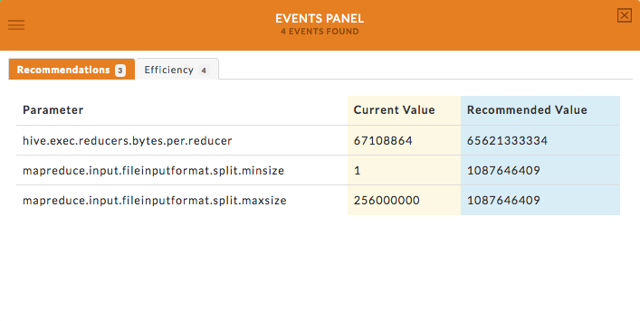 |
Efficiency 1: Used Too Many Reducers
Resulted in the one recommendation (#1).
| 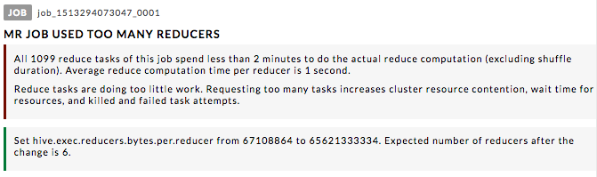 |
Efficiency 2: Reduce Tasks that Start before Map Phase Finishes
Resulted in one suggestion.
| 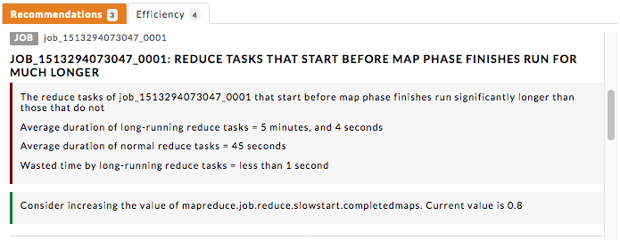 |
Efficiency 3: Too Many Mappers
Resulted in the two recommendations (#2 and #3).
| 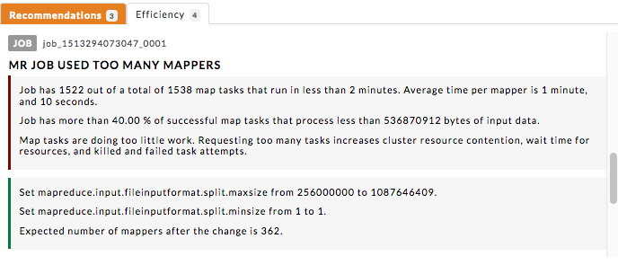 |
Efficiency 4: Large Data Shuffle from Map to Reduce
Resulted in a suggestion.
 |
Tez DAG
This Tez DAG job is part of a Hive Query. In this example the UI engine lists list three (3) events and has four (4) recommendations.
 |
Efficiency 1: Tez DAG Map Vertex used too many tasks
Resulted in two suggestions (#3 and #4) and explanation of the problem.
Efficiency 2: Tez DAG Reducer Vertex used too many tasks
Resulted in one recommendation (#1).
| 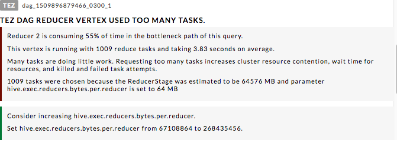 |
Efficiency 3: hive.exec.parallel is set to false
Resulted in one recommendation (#2).
| 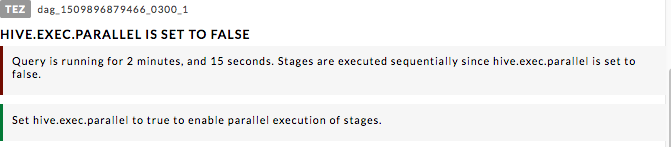 |
Templates
Shows the templates in use. The templates with the highest average duration are shown by default. Use the Showing pull-down menu (1) to chose the display criteria.
Templates with the highest average duration
Templates using most number of map tasks
Templates using most number of reduce tasks
Templates doing most DFS read I/O
Templates doing most DFS write I/O
Templates using most reduce time
Templates using most reduce time
| 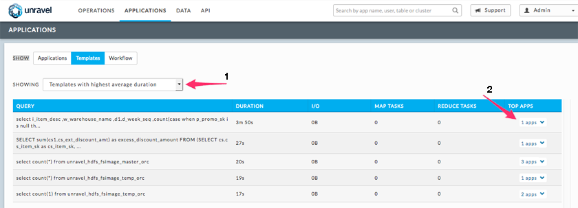 |
Workflow Manager
The Workflow Manager provides a comprehensive view to understand workflows and their patterns of execution. It is used by Workflow (Pipelines) owners
to identify anomalies, inefficiencies and bottlenecks in workflow instances.
The Workflow Manager helps pipeline owners easily maintain SLAs. (Applications that have a Workflow parent will have a link to the workflow in the Goto column in Applications | Applications.)
| 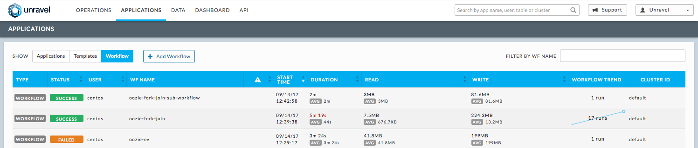 |
Events: The number, if any, of Unravel insights for this query. See the Event Panel Examples for more information.
Duration: Total time taken by the query
Data I/O: Total data read and written by the query.
Number of Yarn Apps: The number of apps that make up the workflow.
| 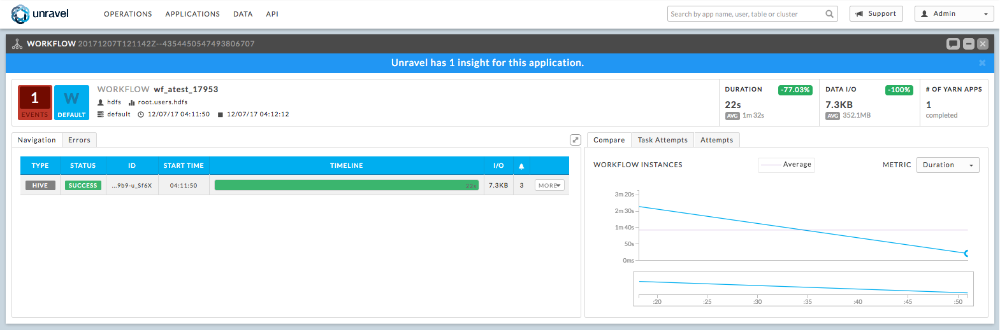 |
The APM opens showing the Navigation and Compare tabs by default.
The left sub-tabs
Navigation: Provides an easy way to understand the breakdown of the workflow the applications which comprise the Workflow, i.e., Hive, Spark, MapReduce, Oozie. Click on More to display the jobs/apps which comprise the type. Click on the Type name to bring up the its APM.
Errors: Exceptions, errors, and warnings associated with this application. See here for an example.
The right sub-tabs
Compare: Provides a quick way to understand how well a workflow run compares to its other runs. Hovering your pointer graph displays instances top KPIs such as duration, data I/O, resources, and the number of jobs in that instance. Clicking on the point in the chart brings up the Workflow APM for that instance. The graph Metrics choices are I/O, MR Jobs, Resource and Events.
Task Attempts: Displays charts for Map Task sand Reduce Tasks, broken down by success, failed, and killed as appropriate.
Attempts: Graphs the attempts over the time interval in Wall Clock time and list the Map and Reduce Slot Duration in total time across all tasks.